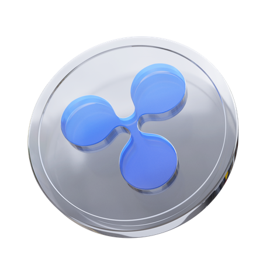
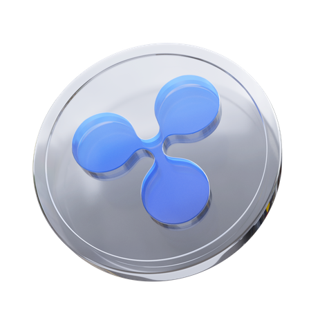

Crypto Boy, the titular character embarking on a thrilling adventure into the world of cryptocurrency. As a crypto enthusiast, he becomes fascinated with the idea of starting his own crypto meme coin. Follow Crypto Boy's journey as he navigates the complex landscape of blockchain technology, encountering both the excitement and the challenges of creating a digital currency infused with humor and memes. His quest to launch his coin is filled with humor, suspense, and a touch of absurdity, reflecting the fast-paced and unpredictable nature of the cryptocurrency market. 'Crypto Boy' offers a unique and entertaining take on the cryptocurrency craze, combining elements of comedy and finance to create a captivating cinematic experience. Join Crypto Boy on his road of financial freedom.
$CRYPTO - TAX 1/1
CA: 0X000000000000000000000
 
